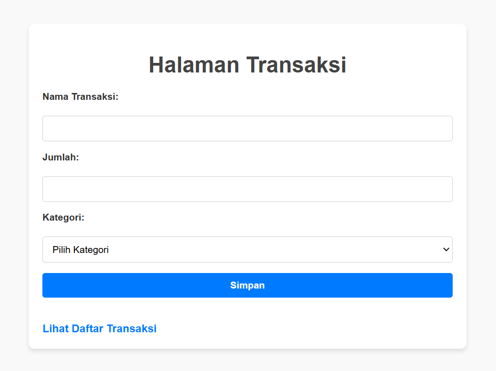
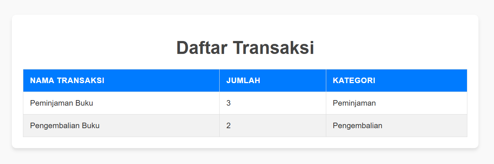

<link rel="icon" href="logoperpus.jpeg">
<header>
        <title>D-Library</title>
    <div class="logo">
        
        <span class="site-title">D-Library</span>
    </div>
    
    <nav>
        <ul>
            <li><a href="index.html">Beranda</a></li> |
            <li><a href="index2.html">Transaksi</a></li> |
            <li><a href="index3.html">Profil</a></li> |
            <li><a href="index4.html">Login</a></li>
        </ul>
    </nav>
</header>

<main>
    <h1 class="welcome-text">Selamat Datang di Aplikasi Perpustakaan Online</h1>
       <center><h4><p>Langkah-langkah menggunakan aplikasi ini:</p></center></h4>
        <ol>
        <div class="step">
            <h2><li>Login ke akun Anda</li></h2>
            
        </div>
        <div class="step">
            <h2><li>Lakukan transaksi peminjaman atau pengembalian buku</li></h2>
            
        <div class="step">
            <h2><li>Periksa detail daftar transaksi anda</li></h2>
            
        </ol>
    </main>
    
    <style>
        @import url('https://fonts.googleapis.com/css2?family=Montserrat&family=Lobster&display=swap');

        body {
        font-family: Arial, sans-serif;
        margin: 0;
        padding: 0;
        background-color: #f2f9fd
    }
    
    main {
        max-width: 800px;
        margin: 50px auto;
        padding: 20px;
        background-color: #246e99
        box-shadow 0 4px 6px rgba(0, 0, 0, 0.1);
        border-radius: 8px;
    }
    
   .welcome-text {
       text-align: center;
       color: #fff;
       margin-bottom: 30px;
       font-family: 'montserrat', cursive;
       font-size: 32px;
       background: linear-gradient(45deg, #246e99, #25357d);
       -webkit-background-clip: text;
       background-clip: text;
       color: transparent;
       animation: typing 4s steps(30) 1s forwards, glow 1.5s ease-in-out infinite alternate;

   }

   @keyframes typing {
        from {
            width: 0;
        }
        to {
            width: 100%;
      }
     }

    @keyframes glow {
        0% {
            text-shadow: 0 0 10px rgba(255, 255, 255, 0.5), 0 0 20px rgba(255, 255, 255, 0.5);
        }
        50% {
            text-shadow: 0 0 20px rgba(255, 255, 255, 0.7), 0 0 30px rgba(255, 255, 255, 0.7);
        }
        100% {
            text-shadow: 0 0 10px rgba(255, 255, 255, 0.5), 0 0 20px rgba(255, 255, 255, 0.5);
        }
     }  

    h1 {
        text-align: center;
        color: #333;
        margin-bottom: 30px;
        font-family: 'Montserrat', cursive;
        font-size: 32px;
        animation: fadein 2s infinite alternate;
    }
    
    .step {
        margin-bottom: 30px;
    }
    
    .step h2 {
        font-size: 18px;
        color: #007BFF;
        margin-bottom: 10px;
    }
    
    .step img {
        max-width: 100%;
        height: auto;
        border-radius: 8px;
        box-shadow: 0 2px 4px rgba(0, 0, 0, 0.1);
    }
    
    @media (max-width: 768px) {
        main {
            margin: 20px;
            padding: 15px;
        }
    
        h1 {
            font-size: 20px;
        }
    
        .step h2 {
            font-size: 16px;
        }
    }
    </style>
</main>
<section class="operational-hours">
    <div class="logo-container">
        
        <h2>D-Library</h2>
    </div>
    <div class="hours-box">
        <h3>Jam Operasional Layanan</h3>
        <ul>
            <li>Senin-Jumat: 08.00 - 19.00 WIB</li>
            <li>Sabtu-Minggu: 09.00 - 15.30 WIB</li>
            <li>Cuti Bersama dan Libur Nasional: <strong>Tutup</strong></li>
        </ul>
    </div>
    <div class="logo-container">
        
        
        
        
    </div>
</section>

<style>
    .operational-hours {
    background-color: #246e99;
    color: white;
    padding: 20px;
    text-align: center;
    border-radius: 8px;
    margin: 20px auto;
    width: 100%;
    box-shadow: 0 4px 8px rgba(0, 0, 0, 0.2);
}

.logo-container {
    display: flex;
    align-items: center;
    justify-content: center;
    gap: 15px;
    margin-bottom: 20px;
}

.logo-container img {
    width: 50px;
    height: 50px;
    border-radius: 50%;
}

.hours-box {
    background-color: #3869a8;
    padding: 15px;
    border-radius: 8px;
    margin-bottom: 20px;
    box-shadow: 0 2px 4px rgba(0, 0, 0, 0.2);
}

.hours-box h3 {
    margin-bottom: 10px;
    font-size: 18px;
}

.hours-box ul {
    list-style: none;
    padding: 0;
    font-size: 16px;
}

.hours-box ul li {
    margin-bottom: 10px;
}

.social-media {
    display: flex;
    justify-content: center;
    gap: 15px;
}

.social-media a {
    color: white;
    font-size: 20px;
    text-decoration: none;
    transition: transform 0.3s ease;
}

.social-media a:hover {
    transform: scale(1.2);
}
</style>

<footer>
    <p>&copy; 2025 D-Library </p>
</footer>

<style>
    /* Global Styling */
    body {
        font-family: Arial, sans-serif;
        margin: 0;
        padding: 0;
    }

    header {
        display: flex;
        justify-content: space-between;
        align-items: center;
        background-color: #246e99;
        color: white;
        padding: 10px 20px;
    }

    .header-container {
        display: flex;
        align-items: center;
    }

    .site-title {
        color: white;
        font-size: 1.8rem;
        font-family: 'Pacifico', cursive;
        white-space: nowrap;
    }

    header .logo img {
        height: 60px;
    }

    nav ul {
        list-style: none;
        margin: 0;
        padding: 0;
        display: flex;
    }

    nav ul li {
        margin: 0 15px;
    }

    nav ul li a {
        color: white;
        text-decoration: none;
        font-weight: bold;
    }

    nav ul li a:hover {
        text-decoration: underline;
    }

    footer {
        text-align: center;
        background-color: #246e99;
        color: white;
        padding: 10px 0;
        margin-top: 20px;
    }

    /* Responsivitas */
    @media (max-width: 768px) {
        nav ul {
            flex-direction: column;
            align-items: center;
        }

        nav ul li {
            margin: 10px 0;
        }
    }
</style> 